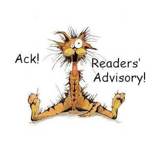

Ope...a Life
#library
#library
Two enormous HVAC units sit on pallets outside the library. They'll be installed on the roof tomorrow. Two maintenance workers roll a large cart filled with HVAC parts around the library, looking for a place to stash it for tomorrow's installation.
"Why don't we just put it in there?" asks the first maintenance worker, nodding toward the study rooms. "We'll ask if it's okay."
The second maintenenace worker glances at the study room and hesitates.
The first maintenance worker asks, "Afraid it'll be stolen?"
The second maintenance worker looks to the first maintenance worker and says, "I'm afraid someone will pee on it or something."
#library
Texas library must reinstate books with 'butts and farts,' court says
The case itself originated from parent complaints that books in the Llano County public library system showed "butts and farts," prompting local officials to instruct the library director to take the books off shelves.
Seven library patrons sued to reinstate the books, claiming the censorship violated the First Amendment. After a district court sided with the patrons and Llano residents appealed, the Fifth Circuit Court of Appeals upheld an injunction to reinstate the offending titles, ordering the books should return to shelves within 24 hours.
"Librarians may consider books’ contents in making curation decisions," judges ruled. "Their discretion, however, must be balanced against patrons’ First Amendment rights... a book may not be removed for the sole—or a substantial— reason that the decisionmaker does not wish patrons to be able to access the book’s viewpoint or message."
#library

How to find new books to read:
- Ask your library staff.
- NoveList, a database probably available through your library, lets you get similar reads by author, title, series, narrator, and keyword.
- Fantastic Fiction offers a "Similar books by other authors" section at the bottom of each book page and a "Visitors to this page also looked at these authors” section at the bottom of each author's page.
- LibraryThing offers a "LibraryThing Recommendations" section on book pages. There are also tag clouds for books and authors.
- Literature-Map allows you to put in an author's name and get similar authors in return, and the effect they use is pretty nifty...like a constellation of authors.
- Whichbook offers searches by mood and emotion, world map, character and plot, and bestsellers.
- Goodreads offers a "Lists With This Book" section on book pages.
caveat lector